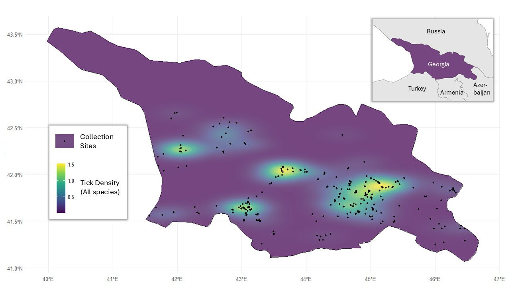
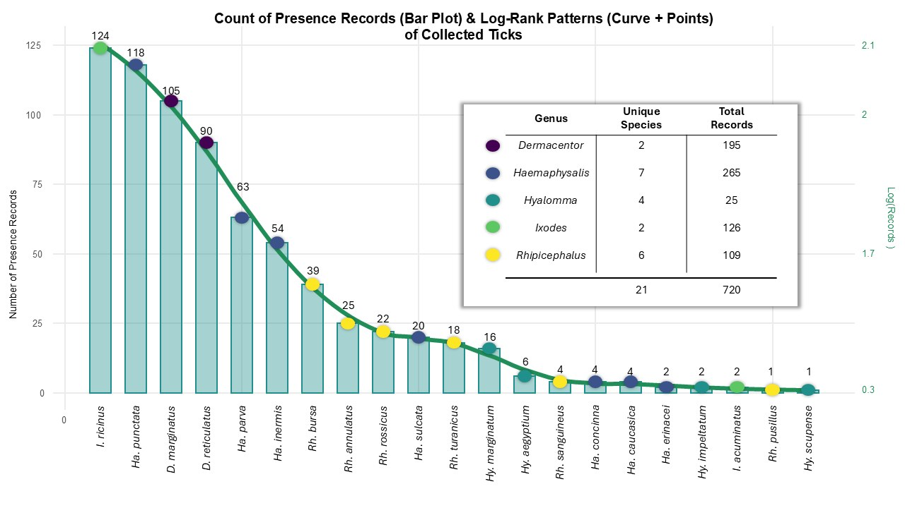
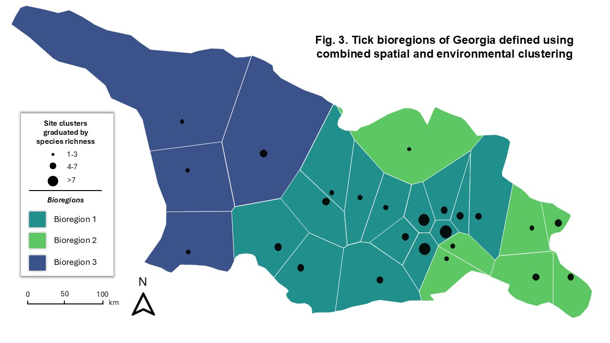
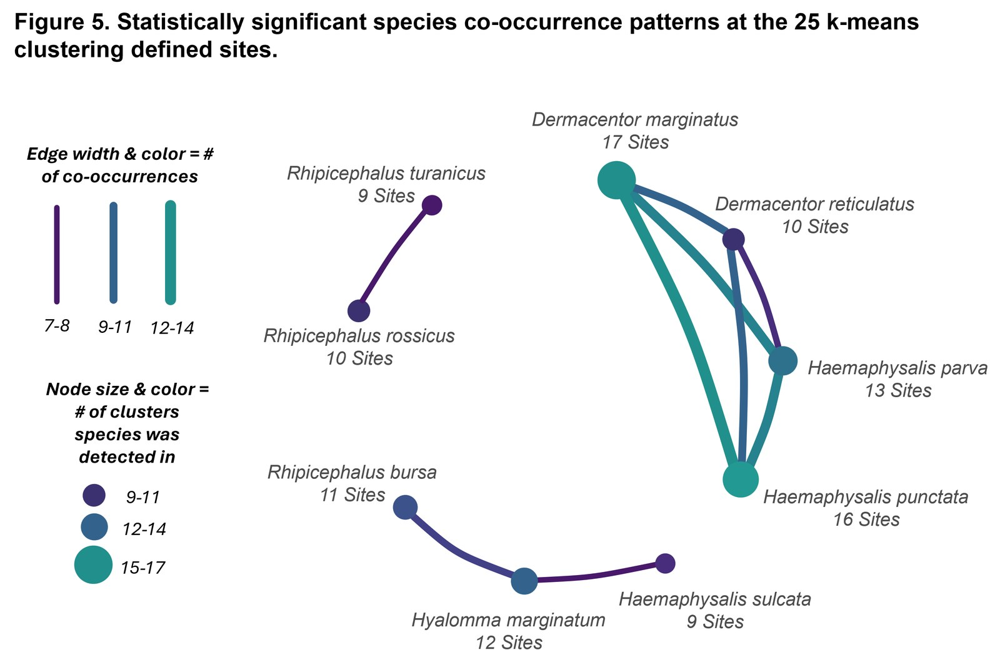
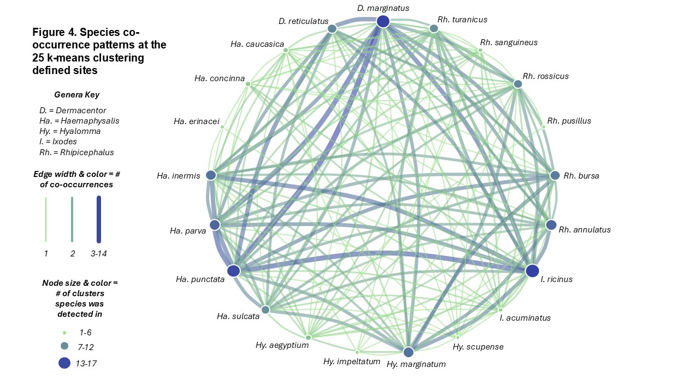
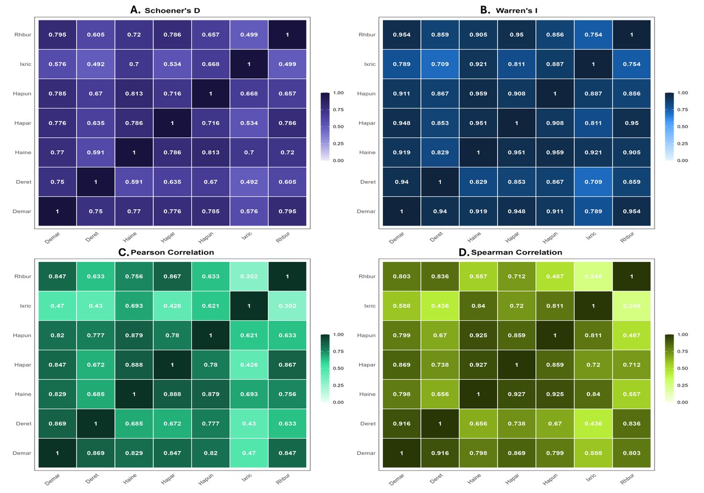
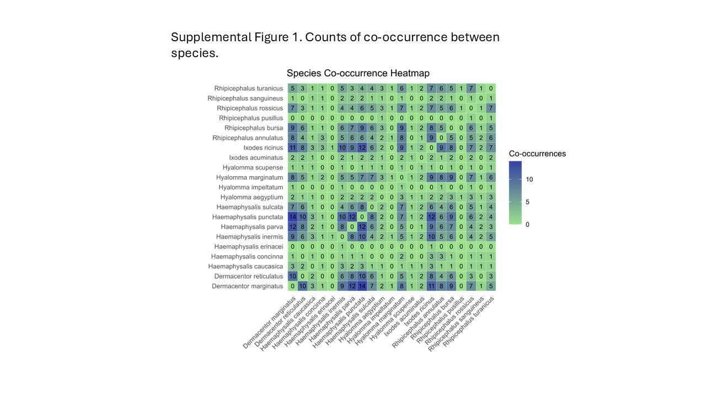

720
Occurrence records
Ten years of surveillance, mapped into bioregions, co-occurrence networks, and species distribution models.
Ticks vector numerous human and veterinary pathogens, so characterising where they live — and which species live together — is foundational to disease control. Within the country of Georgia, in the Caucasus, at least 29 tick species have been documented, yet comprehensive studies of tick community composition and biogeography remain scarce, even as Borreliosis and emerging tick-borne viruses (Jingmen Tick Virus, the Tacheng Tick Viruses) circulate in the region.
This project analyses 720 tick occurrence records representing 21 species across five genera, collected from 580 sites over 216 dates between 2013 and 2023. Combining these records with publicly available climate, soil, terrain, vegetation, and land-cover data, it describes tick geographies, biodiversity, community composition, bioregions, and species distributions across Georgia's roughly 70,000 km² of diverse Caucasus terrain.
Diversity across Georgia was strong (Gini-Simpson = 0.89), with rarefaction estimators (Chao1, jackknife, bootstrap) suggesting roughly two to six additional species are likely present but went undetected here. Haemaphysalis was the most represented genus, contributing seven species and 36.8% of records.
Spatially-constrained hierarchical clustering (ClustGeo) over 25 k-means sites resolved three distinct bioregions that echo Georgia's broad east–west split around its mountainous centre. Annual precipitation, soil pH, and annual temperature range most sharply discriminated the regions. Bioregion 1 — the central grouping — held 84% of records and the highest richness and diversity, with D. reticulatus, Ha. punctata, and D. marginatus as its significant indicator species.
Across the 25 clusters, every species co-occurred with at least one other, and nine species pairs co-occurred significantly more than chance (Veech model) — all positive, none negative. The tightest pairing was D. marginatus with Ha. punctata (14 shared sites). The absence of negative associations suggests competitive exclusion is limited, with environmental filtering and shared habitat likely driving community assembly.
Six species with enough records (≥30) were modelled with boosted regression trees. All models performed well (AUC and TSS > 0.75 across 100 replicates each), with soil organic carbon and annual temperature the most influential predictors. Predicted suitability was highest in central and southeastern Georgia, and distributions overlapped strongly (mean Sørensen's coefficient = 0.61; up to 0.95 between the two Dermacentor species) — areas suitable for one vector often suit several.
| Species | AUC | TSS | Sensitivity | Specificity |
|---|---|---|---|---|
| Dermacentor marginatus | 0.974 | 0.905 | 0.961 | 0.944 |
| Haemaphysalis punctata | 0.967 | 0.867 | 0.945 | 0.922 |
| Ixodes ricinus | 0.957 | 0.841 | 0.920 | 0.920 |
| Dermacentor reticulatus | 0.951 | 0.863 | 0.963 | 0.900 |
| Haemaphysalis parva | 0.946 | 0.862 | 0.940 | 0.922 |
| Haemaphysalis inermis | 0.904 | 0.778 | 0.940 | 0.837 |
Click any figure to enlarge. Colours follow the viridis scale used throughout the study — yellow marks higher values, blue-purple lower.







Species with more than 30 thinned presence records were modelled with boosted regression trees (gbm: 5,000 trees, interaction depth 10, learning rate 0.01, ten-fold cross-validation). Pseudo-absences were drawn at least 25 km from presences, matched one-to-one and down-weighted to 50%, and regenerated across 100 replicates per species; final maps average those replicates. Covariates below 1% relative influence were dropped stepwise, and pairwise range overlap was compared with Sørensen's coefficient.
Occurrence points were reduced to 25 sites via k-means (chosen by elbow analysis) to limit near-neighbour noise. Bioregions were then delineated with ClustGeo Ward-like hierarchical clustering, balancing a haversine spatial matrix against a Jaccard environmental matrix at an equal mixing weight (α = 0.5). Indicator species were identified by multi-level pattern analysis (IndVal, 9,999 permutations).
Diversity was summarised with species richness, three rarefaction estimators, the Gini-Simpson index, and Hill numbers (q = 1, 2), with accumulation and extrapolation curves via iNEXT. Co-occurrence was assessed with both a count network and a probabilistic model (Veech), plus kernel density estimation of sampling intensity. All analysis ran in R 4.5.1; data and code are on GitHub.
All environmental layers were public, resampled to WGS84 at 1 km resolution and reduced for modelling by variance-inflation-factor screening (VIF < 10).
Public health relevance. Strong biodiversity, overlapping distributions, and the primacy of temperature and soil point to the value of integrated, multi-species vector surveillance. Where one medically-relevant tick is suitable, several often are — complicating single-species control and raising the case for coordinated, region-tailored programmes.
Authors. Pshea-Smith IA, Kotorashvili A, Kotaria N, Golubiani G, Kirkitadze G, Chunashvili T, Shubashishvili A, Di Paola N, Kugelman J, Hulseberg C, Walker B, Musich T, Cleary NG, Metrailer MC, Blanton J, Lynn J, Reinbold-Wasson D, Denlinger DS, Blackburn JK, von Fricken ME.
Funding. Supported by the Armed Forces Health Surveillance Division's Global Emerging Infections Surveillance (AFHSD GEIS) awards P0020_23_GA, P0032_24_GA, and P0056_25_GA to the WRAIR-EME vector program, and in part through Battelle Memorial Institute's IAC MAC contract supporting Navy and Marine Corps Force Health Protection Command.
Disclaimer. The authors declare no conflict of interest. The opinions expressed are the private views of the authors and are not to be construed as official or as reflecting the views of the Department of the Army or the Department of Defense.